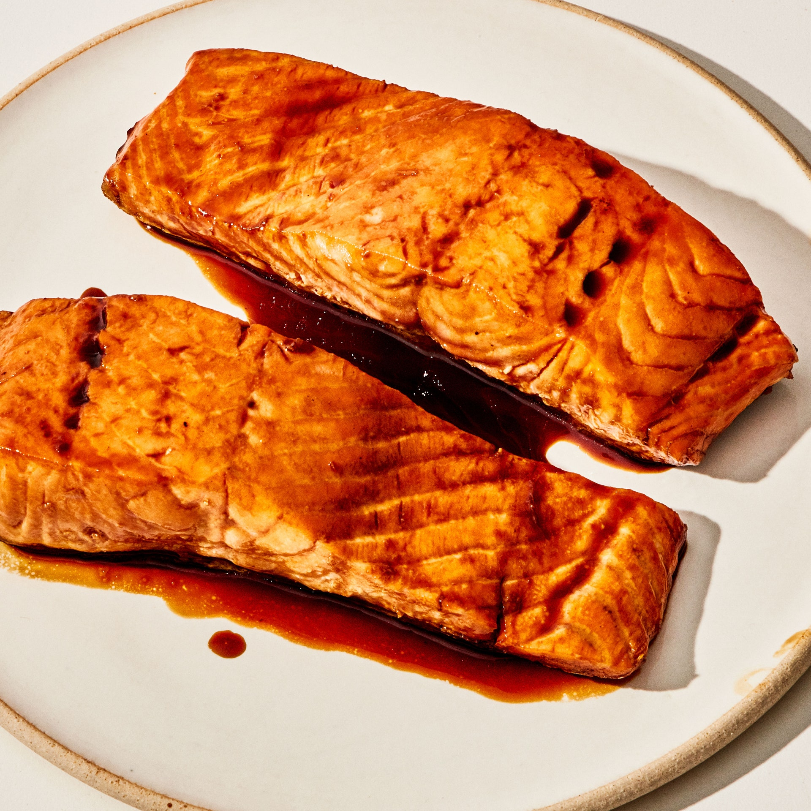

Teriyaki

Description
Stuck in a salmon rut? We got you. You'll never believe how easy it is to make your own sweet-salty teriyaki sauce at home, and there's no better application for it than this beyond-simple weeknight favorite.
It comes together faster than you can cook the rice!
Ingredients
- ½ cup sake
- ¼ cup mirin
- ¼ cup soy sauce
- 1 tablespoon vegetable oil
- 4 boneless salmon fillets
Steps
- Combine ½ cup sake, ¼ cup mirin, and ¼ cup soy sauce in a small bowl; set teriyaki sauce aside.
- Heat 1 Tbsp. oil in a large skillet over medium-high. Season 4 salmon fillets lightly with salt.
- Working in batches and adding more oil if needed, cook, skin side down, until skin is brown and crisp, about 4 minutes. Turn and cook until other side is just beginning to brown, about 2 minutes. Transfer to a plate.
- Pour off fat in skillet. Bring teriyaki sauce to a boil in skillet over medium heat. Cook until reduced by two-thirds, about 4 minutes.
- Add salmon, skin side up, and cook, spooning sauce over, until sauce is syrupy and salmon is just cooked through, about 2 minutes.
- Transfer to platter and serve with white rice, noodles, or a simple salad.